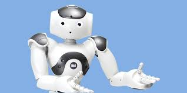

Humanoid Robots are complex anthropomorphic artificial machines. The growing interest in humanoclass robots accompanied by the latest and ever-increasing technological advancements in the field of robotics, locomotion, and AI, achieved by engineers, has speeded up their development over the past decade. Moreover, because of their human-like shape, these robots can use the same equipment and environment as humans, hence, making them more compatible to be used as a building platform for the physical implementation of the Digital Twin.
Humanoid Robots includes a rich diversity of projects where perception, processing, and action are embodied in a recognizably anthropomorphic form inorder to emulate some subset of the physical, congnitive and social dimensions of the Human body and experience
23-09-2024:Overview
It contains an overview of Humanoid Robots
24-09-2024:What is a Humanoclass Robot
Briefly describes about Humanoid robots
25-09-2024:Human-Robot Interaction
Describes about the interacton between Human amd Robot
It includes a rich diversity of projects where perception, processing, and action are embodied in a recognizably anthropomorphic form in order to emulate some subset of the physical, cognitive, and social dimensions of the human body and experience. Humanoclass robotics is not an attempt to recreate humans.